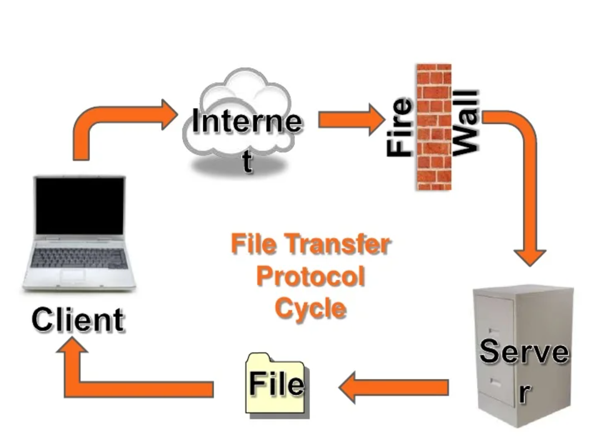

- It is a standard network protocol used to transfer files between a client and a server over the internet or a TCP/IP network.
- It allows users to upload, download and manage files on a remote server.
- Common uses of FTP include uploading website files to a web server, downloading files from a remote server and sharing large files between organizations.

FTP works by establishing two separate connections between the client and the server.
- The first connection is the control connection which is used to send commands and receive responses between the client and the server.
- The second connection is the data connection which is used to transfer the actual files. When a user wants to transfer a file they first connect to the FTP server using an FTP client such as FileZilla by entering the server address, username and password. Once connected the user can browse the files on the server, upload files from their computer to the server or download files from the server to their computer.